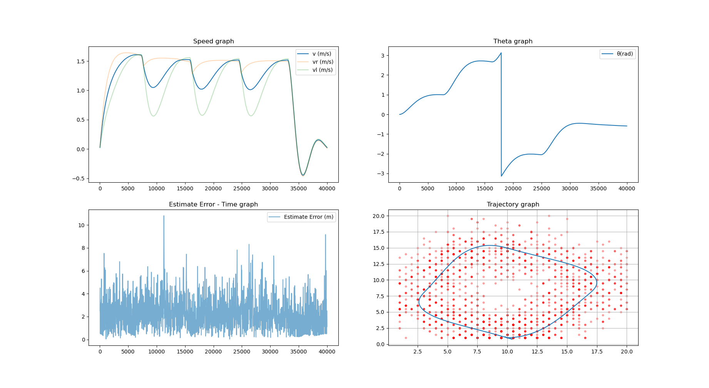

1. Introduction for indoor-localization
Localization for AGV in indoor environment might be tricky. Because GPS
does not work indoors, various solutions using networks - such as
bluetooth, zigbee, wifi - has been researched. Utilizing networks for
indoor localization can be composed in various ways. One commonly used
indoor positioning system is a method of determining location through
the RSSI (Received Signal Strength Indicator) values transmitted from
sensors in a wireless sensor network.
2. KNN + fingerprinting
RSSI decreases as the distance between the transmitter and receiver
increases, and this decrease can be used to estimate the distance. This
can be estimated based on the Path Loss Model, which takes into account
environmental factors. One of the commonly used indoor positioning
systems that uses RSSI is based on fingerprinting. In this approach,
real-time RSSI vectors are matched with pre-built offline RSSI vector
maps. We tested various comparison methods and constructed a positioning
system using KNN. We also evaluated the performance of the RSSI
reconstruction algorithm and the KNN positioning system based on packet
loss rate and various noise characteristics of RSSI. Additionally, we
analyzed the difference between the actual and predicted positions of
AGVs using the loss RSSI reconstruction algorithm.
3. Using LSTM network for localizing with lossy RSSI
In our basic research, we developed an algorithm to complement the RSSI
vector in a traditional way, and used this method to estimate the
position of the AGV using KNN by recovering the RSSI vector with loss.
To create a more robust system, we complemented the AGV's sensor data,
namely speed, acceleration, and steering angle, by fusion. However, this
approach has the disadvantage of an unstable initial value problem and
the inability to effectively utilize the RSSI values obtained from the
previous point. Since packet loss is estimated only with the RSSI of the
current point and errors are corrected, we predicted that performance
could be further improved if the RSSI of the previous point were also
considered.
Based on this idea, I used Pytorch to build a 3-layer LSTM network model
and conducted a study to train the sequential pattern of RSSI data. I
recorded RSSI values for each situation when the packet loss rate was
0.0, assuming the sensor nodes (AP) were in fixed positions. The AGV's
location was labeled, and the RSSI tuple was used as X to change the
data shape into a supervised learning format. The X data became a
two-dimensional data (time axis, RSSI intensity). I sliced the data
along the time axis and trained the model by changing the parameters.

To be honest, the performance of this experiment was not outstanding,
mainly due to two reasons: 1) the amount of data was too small, and 2)
the model we built was not robust enough to handle lossy RSSI vectors.
Although our goal was to predict the next position, we realized that it
might be more effective to develop a neural network that can estimate
which elements in the RSSI vector are lossy and how much packet loss has
occurred, a network that can recover the RSSI vector based on this
information, and a network that can estimate the position based on the
recovered RSSI vector. If we had divided the problem into these three
sub-tasks and ensemble the results, we might have obtained better
results.